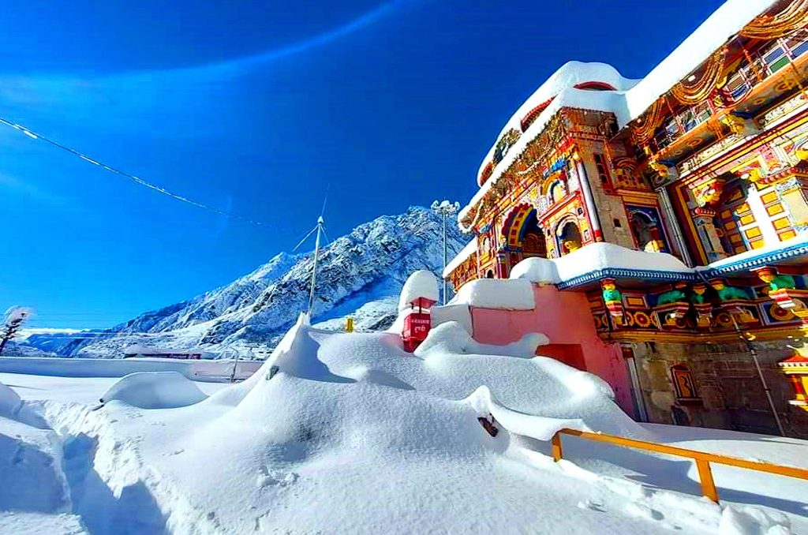
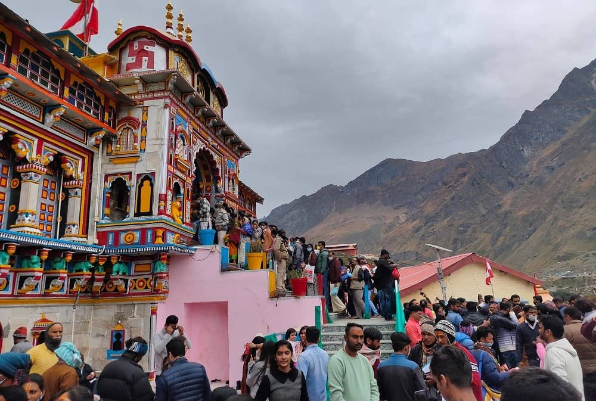
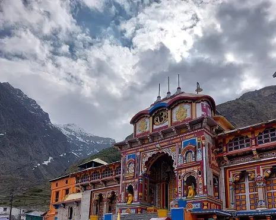

Featured Photos




Badrinath, located in the Chamoli district of Uttarakhand, is one of the holiest Hindu pilgrimage sites dedicated to Lord Vishnu. Situated at an altitude of 3,133 meters (10,279 feet) above sea level, Badrinath is nestled amidst the Garhwal Himalayas. The town is home to the ancient Badrinath Temple, which is believed to have been established by the Adi Shankaracharya in the 8th century. Devotees from all over the world visit Badrinath to seek blessings and spiritual solace. Apart from its religious significance, Badrinath offers stunning views of snow-capped peaks, lush greenery, and serene surroundings, making it a must-visit destination for nature lovers and spiritual seekers alike.